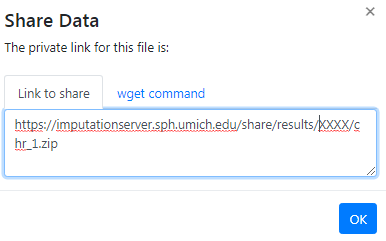
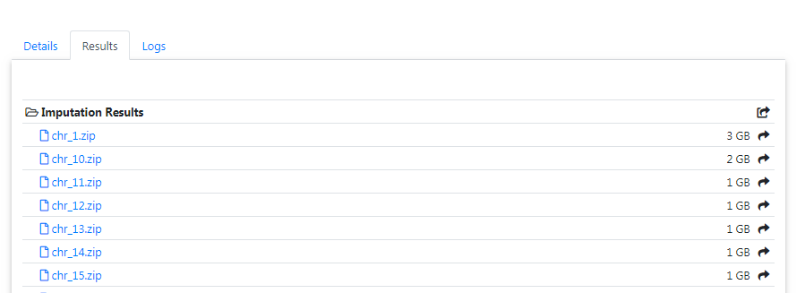

The user is notified by email, as soon as the imputation job has finished. A zip archive including the results can be downloaded directly from the server. To decrypt the results, a one-time password is generated by the server and included in the email. The QC report and filter statistics can be displayed and downloaded as well.
All results can be downloaded directly via your browser by clicking on the filename.

In order to download results via the commandline using wget or aria2 you need to click on the share symbol (located right to the file size) to get the needed private links.
A new dialog appears which provides you the private link. Click on the tab wget command to get a copy & paste ready command that can be used on Linux or MacOS to download the file in you terminal:
To download all files of a folder (for example folder Imputation Results) you can click on the share symbol of the folder:
